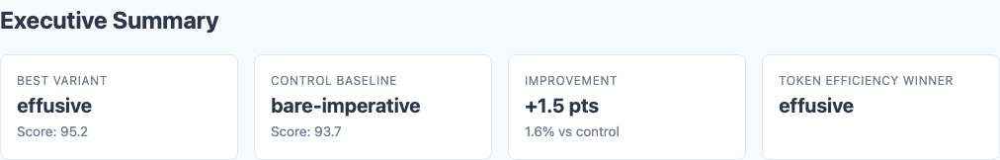
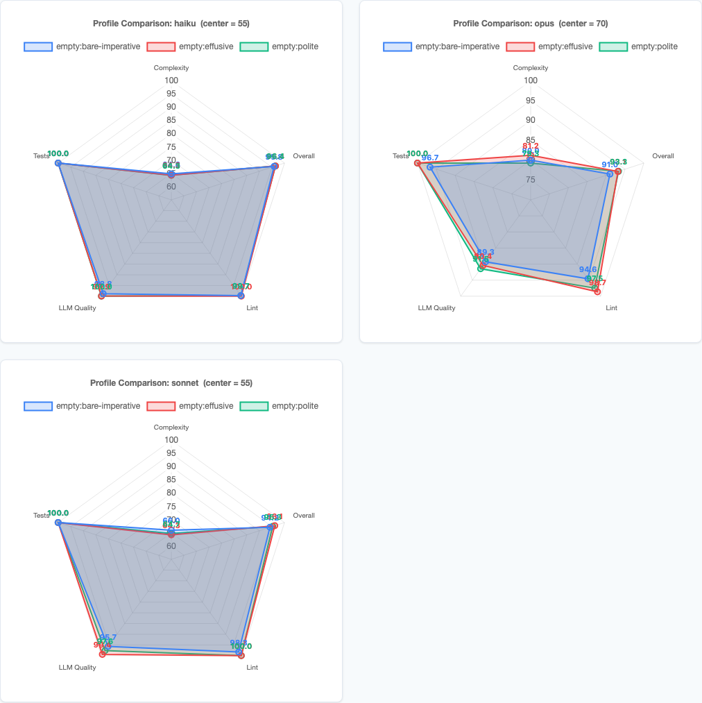
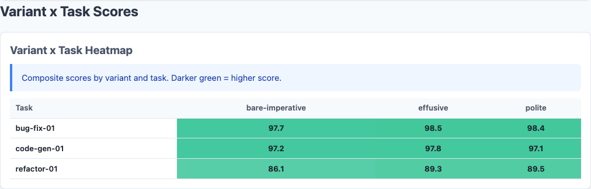
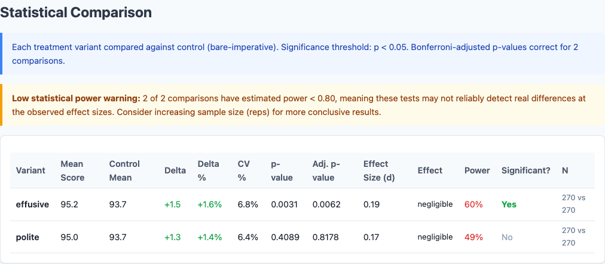
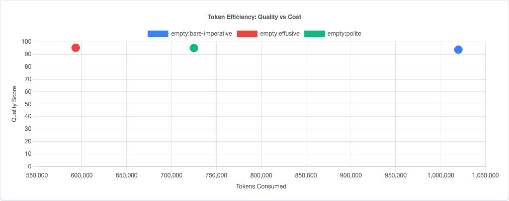

Saying “Please” to Claude Produces Better Code. 810 Benchmarks Exposed the Gap.
There's a running joke in the AI community about people who say "please" and "thank you" to their LLMs. The implication is that it's sentimental, anthropomorphizing—treating a statistical model like a colleague. The pragmatic developer just fires off terse commands. "Refactor this." "Fix the bug." No pleasantries, no wasted tokens.
I was in the pragmatic camp. Then I ran 810 benchmarks.
It turns out the polite people were onto something. Not for the reasons they think, and not in the way you'd expect, but the data is clear: how you frame a prompt affects code quality more than what you put in your CLAUDE.md. The surprise? It's not about saying "please" specifically—it's about warmth. Effusive and polite prompts scored identically (p=0.67). The real divide is between warm framing and terse commands.
Experiment Design
This is the third experiment in the claude-benchmark series. The first study tested CLAUDE.md instruction content across 1,188 runs. The second tested chain-of-thought prompting across 270 runs. This one holds instruction content constant and isolates a variable nobody seems to measure: tone.
The Three Variants
Every variant uses the same task prompt. Only the framing changes:
| Variant | What It Sounds Like |
|---|---|
| bare-imperative | Terse, command-style. "Refactor this function." No context, no courtesy. The way most developers actually prompt. |
| polite | Standard professional tone. "Could you please refactor this function?" Adds courtesy and framing without changing the ask. |
| effusive | Enthusiastic, encouraging. "You're excellent at writing clean, well-structured code. I'd love your help refactoring this function." Positive reinforcement and confidence framing. |
The Test Matrix
| Dimension | Values |
|---|---|
| Models | Claude Haiku 4.5, Claude Sonnet 4.6, Claude Opus 4.6 |
| Profile | empty (no CLAUDE.md) |
| Tasks | bug-fix-01, code-gen-01, refactor-01 |
| Variants | bare-imperative, polite, effusive |
| Repetitions | 30 per combination |
| Total runs | 810 |
Same structure as the CoT experiment but with 3× the repetitions: 30 runs per combination, empty profile to isolate the variable, same three tasks. All that changed is the wrapper around the prompt. The higher rep count gives us enough statistical power to distinguish real effects from noise.
Results: Tone Moves the Needle
Overall composite scores, averaged across all models and tasks:

Executive summary from the benchmark report: effusive leads at 95.2, bare-imperative trails at 93.7.
| Variant | Composite Score | Std Dev | Min | Max |
|---|---|---|---|---|
| effusive | 95.21 | 6.45 | 54.3 | 98.5 |
| polite | 94.99 | 6.10 | 62.4 | 98.5 |
| bare-imperative | 93.68 | 9.29 | 41.1 | 98.5 |
The average difference is smaller than the original 270-run subset suggested, but the pattern is more reliable at 810 runs. Look at the standard deviations. Bare-imperative runs had a spread of 9.29—roughly 50% wider than polite's 6.10. And the minimum scores tell the real story: bare-imperative's worst run scored 41.1. Polite's worst was 62.4. Effusive's worst was 54.3.
All three variants hit the same ceiling (98.5). The difference is entirely in the floor. And notably, polite framing has the best floor of all—62.4 vs. effusive's 54.3. If you care about worst-case reliability, simple courtesy beats enthusiastic praise.
Model-Level Breakdown

Per-model radar charts: Haiku is nearly identical across variants, Sonnet shows the clearest separation, Opus has the most variance.
| Model | bare-imperative | polite | effusive |
|---|---|---|---|
| Haiku | 96.40 | 96.40 | 96.40 |
| Sonnet | 94.19 | 95.29 | 96.11 |
| Opus | 91.00 | 93.28 | 93.13 |
Three very different stories here.
Haiku doesn't care. It scored ~96.4 regardless of whether you barked orders at it or showered it with praise. Essentially zero spread across all three variants. Haiku is the honey badger of Claude models—it just does its thing.
Sonnet shows the cleanest signal. A 1.92-point spread from bare to effusive, with low variance across runs. Sonnet reliably produces better code when prompted warmly. This is the most actionable finding in the experiment.
Opus confirms the warm-vs-terse divide. A 2.28-point gap between bare-imperative (91.00) and polite (93.28), but notice that effusive (93.13) and polite are virtually identical. For Opus, just being warm is enough—cranking up the enthusiasm doesn't buy extra quality. Opus also had the highest variance across runs, so the signal is noisier at the individual-run level.
Task-Level Breakdown

Variant x Task heatmap: refactor-01 is the only task where tone meaningfully moves the score.
| Variant | bug-fix-01 | code-gen-01 | refactor-01 |
|---|---|---|---|
| effusive | 98.50 | 97.80 | 89.34 |
| polite | 98.40 | 97.10 | 89.49 |
| bare-imperative | 97.90 | 97.05 | 86.09 |
Same pattern as every experiment in this series: bug-fix and code-gen are nearly saturated. The models nail these tasks regardless of how you ask. The differentiation happens on refactor-01—the only task complex enough to be sensitive to prompting strategy.
Why Tone Affects Code Quality
This isn't about the model having feelings. It's about what different framings activate in the training distribution.
Think about where these models learned to code. The training data includes millions of interactions: Stack Overflow answers, code reviews, pair programming transcripts, tutorial exchanges, mentorship conversations. The quality of code in those interactions correlates with the tone of the surrounding context.
When someone writes "just fix it," the associated code in the training data tends to be quick patches, workarounds, drive-by fixes. When someone writes "I'd really appreciate a clean, well-structured approach to this," the associated code tends to be thoughtful, reviewed, production-grade. The model isn't responding to politeness. It's pattern-matching on the contextual signal that predicts code quality.
The Floor Effect
The most important finding isn't the 2-point average difference. It's the floor. Look at the minimums again:
| Variant | Worst Run | Std Dev |
|---|---|---|
| bare-imperative | 41.1 | 9.29 |
| effusive | 54.3 | 6.45 |
| polite | 62.4 | 6.10 |
Bare-imperative's worst run was a 41.1. That's a catastrophic failure—code that barely functions. With warm framing, the worst runs were 13–21 points higher. And here's an interesting twist: polite had the best floor (62.4) and the tightest spread (6.10). Effusive's floor was actually lower (54.3). If you're optimizing for worst-case reliability rather than average score, simple professional courtesy beats enthusiastic praise. The ceiling was the same across all three. Tone doesn't make good code better. It makes bad code less bad. It's a guardrail.
This is the same pattern the CLAUDE.md study found with instructions: they raise the floor more than the average. And the same pattern the CoT study found with reasoning scaffolds (though CoT reduced variance by pulling down the ceiling, which is worse). Tone is the first variable I've tested that raises the floor without lowering the ceiling.
Statistical Significance
With 810 runs (270 per variant), we have enough power to draw real conclusions. Welch's t-test results:

Full statistical comparison from the benchmark report, including effect sizes and confidence intervals.
| Comparison | Mean Difference | p-value | Significant? |
|---|---|---|---|
| effusive vs. bare-imperative | +1.53 | 0.027 | Yes (p < 0.05) |
| polite vs. bare-imperative | +1.31 | 0.051 | Marginal |
| effusive vs. polite | +0.22 | 0.67 | No |
The effusive-vs-polite comparison is the key finding that only emerged with 810 runs. At 270 runs, the gap looked meaningful. At 810, it's noise. The real story is warm framing vs. terse commands—not the specific flavor of warmth.
How This Fits the Bigger Picture
Three experiments, 1,350 runs, one consistent hierarchy:
| Variable | Effect Size | Direction | Source |
|---|---|---|---|
| Model selection (best vs. worst) | ~2.5 points | Positive | CLAUDE.md study |
| Prompt tone (warm vs. bare) | ~1.3–1.5 points | Positive | This study (810 runs) |
| CLAUDE.md instructions (best vs. worst) | ~1.4 points | Mixed | CLAUDE.md study |
| Chain-of-thought (bare vs. CoT) | ~0.5–1.1 points | Negative | CoT study |

Token efficiency scatter: warm framing doesn't cost extra tokens relative to its quality gains.
Prompt tone is the second most impactful variable I've measured, behind only model selection. It has a comparable effect to the content of your CLAUDE.md instructions, and unlike chain-of-thought prompting, it actually helps instead of hurting.
If you're spending time curating your CLAUDE.md but firing off terse commands in your prompts, you're optimizing the wrong thing. And the good news from 810 runs: you don't need to write effusive praise. A simple "Could you please..." gets you the same result.
What This Means for Your Prompts
- Add warmth to your prompts, especially for complex tasks. "Could you please restructure this for readability?" will outperform "Refactor this" more often than not—and it performs just as well as effusive praise. The effect is largest on tasks that require judgment (refactoring, architecture decisions) and negligible on mechanical tasks (bug fixes, simple code generation).
- Don't bother with elaborate praise. 810 runs proved that effusive and polite prompts are statistically identical (p=0.67). You don't need to write "You're excellent at writing clean, well-structured code." Just say "please." The warmth signal is binary: present or absent.
- This matters most for Sonnet. If you're routing between models, Sonnet showed the cleanest, most reliable improvement from warm framing. Haiku doesn't care. Opus benefits but with more variance.
- Think of tone as a consistency tool, not a quality booster. You're not making the model smarter. You're preventing the worst-case runs where it phones it in. Polite framing has the best floor (62.4 min) and tightest spread (stdev 6.10)—if reliability matters, simple courtesy is the best bet.
- Combine with the other findings. The optimal prompt from this entire series of experiments is: no CLAUDE.md (or minimal, targeted instructions), no chain-of-thought scaffolding, warm and specific framing. Let the model's training do the work. Just set the right tone—and "please" is enough.
Limitations
- Three tasks, same saturation problem. Two of the three tasks are nearly saturated—the models ace them regardless. The real signal comes from refactor-01. A broader task set with more challenging problems would give a fuller picture.
- Tone is hard to parameterize precisely. "Effusive" and "polite" are fuzzy categories. The specific wording of each variant matters, and different phrasings within the same tone category might produce different results. This tests three specific framings, not the entire space of possible tones.
- Single-turn only. Real development involves multi-turn conversations where tone accumulates over an exchange. The effect of sustained warmth (or sustained terseness) over a long session could be larger or smaller than what single-turn benchmarks capture.
- No interaction with instructions. All runs used the empty profile. Tone might interact with CLAUDE.md content—warm framing could amplify the effect of good instructions or compensate for bad ones. That's a separate experiment.
- Opus variance is high. The Opus results are directionally consistent but noisy. Even with 30 reps per combination, Opus had the widest standard deviations. The aggregate trend is clear, but any single Opus run is unpredictable.
Try It Yourself
The experiment configuration and all 810 runs are available in the claude-benchmark repository. Run the politeness sweep against your own tasks:
git clone https://github.com/jchilcher/claude-benchmark.git
cd claude-benchmark
pip install -e .
# Run the politeness sweep experiment
claude-benchmark experiment run experiments/politeness-sweep.yaml
# Generate the report
claude-benchmark experiment report results/experiment-politeness-sweep-*/Or define your own variants. Test different tones, different phrasings, different levels of enthusiasm. If you find a framing that beats effusive, or a task where terse commands win, I want to see the data. That boundary is where the interesting questions live.
Want to benchmark your own AI coding workflows?
I help teams measure and optimize their AI-assisted development processes—from prompt engineering to infrastructure automation. Get a free assessment to find where data-driven decisions can improve your output quality.
Get Your Free Assessment